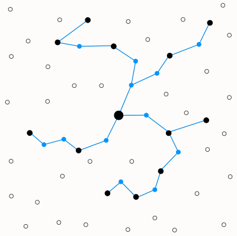
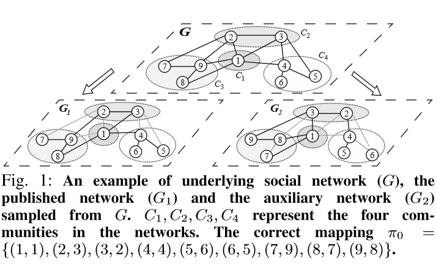
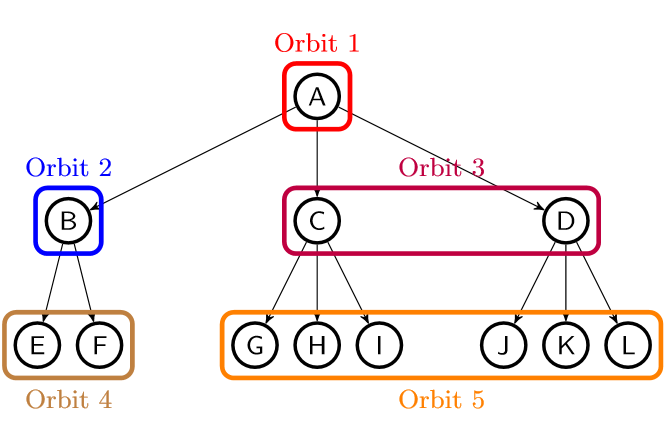
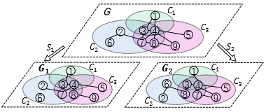

|
Hi, my name is Shuaiqi Wang. I am now a senior student in Shanghai Jiao Tong University, China, majoring in Computer Science. I am also a member of Zhiyuan Honors Program of Engineering. I have joined the Intelligent Internet of Things (IIOT) Research Center since 2017, advised by Prof. Luoyi Fu and Xinbing Wang. |
|
|
|
Shanghai Jiao Tong University, China, from Sep. 2016 to present |
|
My current research interests span network science, performance modeling, algorithm and optimization. Equally, I am also interested in applications of these areas, particularly those pertaining to networked and distributed systems. |
|
|
|  |
Efficient Distributed Steiner Tree Construction in Wireless Sensor Networks with Unreliable Links
In wireless sensor networks, multicast tree is the most common structure for the multicasting, an important data transmission pattern. Constructing the minimum multicast tree can be converted to the classical Steiner Tree Problem, which is proved to be NP-complete. Although wireless communication is notoriously unreliable in practice, almost all previous works on constructing the multicast tree neglected this property. Motivated by this, I Analyzed the effect of unreliable links on data communication and, for the first time, designed a distributed algorithm to construct the approximate Steiner tree based on unreliable links with high time and energy efficiency. In this project, I accomplished all aspects and finally summarized them in a 12-page paper with an 18-page techncial report. Moreover, this research requires strong mathematical background, and the methods involved span mathematical analysis, probability theory, discrete mathematics and so on. |
|  |
On Social Network De-anonymization with Communities: A Maximum A Posteriori Perspective
A crucial privacy-driven issue nowadays is reidentifying anonymized social networks by mapping them to correlated cross-domain auxiliary networks, and it is also denoted as de-anonymization problem. Although there are several prior works studying on one of the branches of this issue: seedless de-anonymization, they either theoretically derive cost functions without proposing algorithms or propose algorithms without sufficient theoretical rationales supporting the performance guarantee. To fill this gap, we first derived the cost functions as metrics to quantify the structural mismappings between networks based on Maximum A Posteriori estimation. Then we further our theoretical analysis by figuring out the conditions under which minimizing the cost function can perfectly recover the correct mapping. At last we designed algorithms for the first time to approximately minimize the proposed MAP-based cost functions. This work is under minor review in IEEE/ACM Transactions on Networking. |
|  |
De-anonymizability of Social Network: Through the Lens of Symmetry
Although social network de-anonymization has received intensive study in network science, it remains less understood how network structural features intrinsically affect whether or not the network can be successfully de-anonymized. To find this answer, we analyzed how the symmetry of graphs will affect the de-anonymizability without any network model assumption for the first time. Then based on the analysis, we proposed a method to quantify the de-anonymizability of given networks based on concepts of automorphism and homomorphism in the abstract algebra. Finally, we designed an approximate algorithm to estimate de-anonymizability via sampling techniques. This work is submitted to MobiHoc 2020. |
|  |
De-anonymizing Social Networks with Overlapping Community Structure
Although the seedless de-anonymization problem have been explored by several previous works through various of network models, all those models cannot preciously capture the real social networks. Motivated by this, we adopt a more practical social network model parameterized by overlapping communities, which can serve as side information for de-anonymization. In this work, we derived the cost function of expected number of mismapped users based on Minimum Mean Square Error for the first time. After simplilfying the cost function by transforming it into a weighted-edge matching problem, we figured out the approximation ratio and proposed an approximate algorithm via convex-concave optimization method. This work is under minor review in IEEE/ACM Transactions on Networking. |
|
X. Wu, S. Wang, Z. Hu, L. Fu and X. Wang, "De-anonymization of Social Networks: The Power of Symmetry". X. Wu, L. Fu, S. Wang, B. Jiang, X. Wang and G. Chen, "Collective Influence Boosts Influence Maximization". |
|
Zhiyuan College Honors Scholarship, Shanghai Jiao Tong University, 2017 - 2019 Academic Excellence Scholarship, Shanghai Jiao Tong University, 2017 - 2019 The first price, Chinese University Student Computer Design Competition, 2019 |
|
Besides computer science, I am also crazy about math. I have taken or audited plenty of courses held by mathematic department, such as abstract algebra and stochastic process. Moreover, I held a seminar discussing fundamental problems in mathematical analysis with a group of talented people when I was a freshman. Fascinated by the free thought and infinite possibilities, I enjoy exploring the literary world. My favorite writter is Albert Camus. |